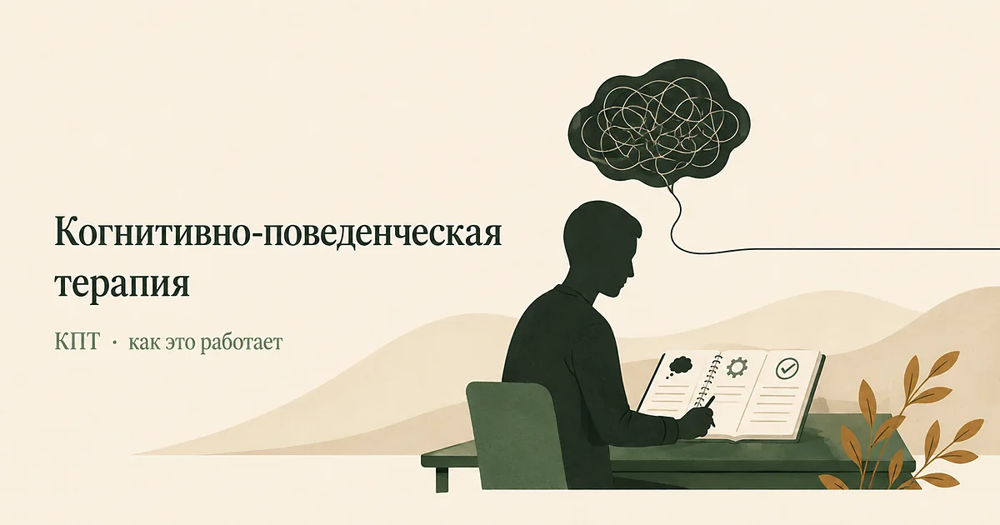

Когнитивно-поведенческая терапия (КПТ)
Обновлено: 10.08.2026 · 7 минут чтения
КПТ — это подход, который работает не с прошлым, а с тем, как вы истолковываете происходящее прямо сейчас. Его основная идея: страдание вызывают не сами события, а мысли о них, и эти мысли можно заметить, проверить на прочность и изменить. КПТ — самый исследованный вид психотерапии в мире и первая линия помощи при тревожных расстройствах и депрессии по рекомендациям ВОЗ и NHS.

Что такое КПТ
Когнитивно-поведенческая терапия выросла из работ Аарона Бека, который в 1960-х заметил странность: его пациенты с депрессией сообщали о потоке автоматических мыслей, который они сами почти не замечали. «Я всё испортил», «у меня никогда не получится», «они наверняка считают меня глупым» — эти фразы проносились так быстро, что человек осознавал уже только их последствие: тяжесть в груди, желание спрятаться.
Отсюда родилась главная идея метода. Между событием и вашей реакцией всегда есть промежуточное звено — интерпретация. Один и тот же непрочитанный ответ на сообщение один человек объяснит «он занят», другой — «я сказал глупость, теперь он меня избегает». События одинаковы, состояния разные. КПТ учит замечать это звено и работать с ним.
Важно, что подход не про «мысли позитивно». Задача — не заменить мрачные мысли бодрыми, а проверить их на соответствие фактам. Иногда проверка подтверждает опасение — и тогда работа идёт уже с реальной проблемой, а не с фантазией о ней.
Как это работает: мысль → чувство → действие
В основе метода — простая схема, которую в терапии называют ABC: активирующее событие, убеждение о нём, последствие в виде эмоции и поведения. Разберём на примере.
| Звено | Пример |
|---|---|
| Событие | Руководитель позвал на разговор без объяснения темы |
| Мысль | «Меня будут увольнять. Я не справился» |
| Эмоция | Тревога, стыд, ком в горле |
| Поведение | Не спать ночь, репетировать оправдания, избегать коллег |
Поменять событие нельзя. Но между событием и бессонной ночью стоит мысль, у которой есть альтернативы: «не знаю, о чём разговор», «за полгода замечаний не было», «если бы увольняли, вызвал бы HR». Ни одна из них не «позитивнее» — они просто точнее.
Вторая половина метода — поведенческая, и её часто недооценивают. Тревога живёт за счёт избегания: каждый раз, когда вы не идёте на встречу, мозг получает подтверждение «было опасно, хорошо что не пошёл». Поэтому в КПТ мысли не только обсуждают, но и проверяют действием — постепенно возвращаясь в ситуации, которых вы избегали.
Что происходит на сессии
КПТ — структурированный метод, и это заметно с первой встречи. Сессия обычно устроена так: короткий обзор недели, обсуждение домашнего задания, работа с конкретной ситуацией, договорённость о следующем шаге. Терапевт задаёт вопросы, а не даёт советы: «что вы подумали в этот момент?», «а что говорит против этой мысли?», «как мы можем это проверить?».
Между сессиями почти всегда есть задание — и это не формальность, а главный рабочий инструмент. Обычно это дневник мыслей: три колонки — ситуация, автоматическая мысль, эмоция, — к которым позже добавляются доказательства за и против и более сбалансированный вывод. Люди, которые ведут дневник, получают заметно лучший результат, чем те, кто ограничивается разговорами в кабинете.
При каких состояниях помогает
КПТ — первая линия помощи при большинстве тревожных расстройств и при депрессии лёгкой и умеренной степени. Доказательная база у метода самая большая среди психотерапевтических подходов, и именно поэтому его чаще всего включают в клинические рекомендации.
- генерализованная тревога и постоянное беспокойство;
- панические атаки и паническое расстройство;
- социальная тревожность и страх публичных выступлений;
- депрессия лёгкой и умеренной степени;
- бессонница — для неё есть отдельный протокол КПТ-Б, который эффективнее снотворных в долгой перспективе;
- навязчивые мысли и ОКР;
- прокрастинация и трудности с самоорганизацией.
Сколько длится и чего ожидать
КПТ — короткий метод по меркам психотерапии: типичный курс при тревожном расстройстве или депрессии занимает от 8 до 20 сессий раз в неделю. Это не значит, что за два месяца изменится всё, — но первые сдвиги обычно заметны к четвёртой-шестой встрече, и по ним можно понять, работает ли метод именно для вас.
Чего ожидать не стоит: что станет легче сразу и линейно. При работе с избеганием тревога сначала часто растёт — вы делаете то, чего избегали. Это нормальная часть процесса, и о ней предупреждают заранее.
Ограничения: кому подходит хуже
Честный разговор о методе включает и его границы. КПТ работает хуже, когда:
- проблема не в искажённом мышлении, а в реальных обстоятельствах — насилии, бедности, тяжёлой болезни. Тут нужны действия, а не переоценка мыслей;
- речь о глубоких повторяющихся паттернах, идущих из детства: с ними лучше справляется схема-терапия;
- человеку плохо даётся структурированная работа и домашние задания — тогда подойдёт что-то менее формализованное;
- основная трудность — не с мыслями, а с тем, чтобы вообще выдерживать сильные чувства: здесь ближе ACT и терапия сострадания.
И общее ограничение: при тяжёлой депрессии психотерапия обычно сочетается с медикаментами, а не заменяет их. Это решение принимает врач.
КПТ и AI Therapist
Наши психологи опираются на принципы КПТ: помогают заметить автоматическую мысль, отделить факт от интерпретации, разложить ситуацию по схеме ABC и наметить проверяемый шаг. В приложении можно прямо выбрать подход в настройках — тогда ответы будут строиться ближе к когнитивной логике, с наводящими вопросами вместо утешений.
Что важно сказать прямо: это не психотерапия. Терапия — это работа с живым специалистом, который несёт ответственность, видит вас в динамике и умеет распознать то, о чём вы не сказали. Приложение помогает в промежутке между приёмами или тогда, когда до приёма ещё далеко: разложить мысль по полочкам в три часа ночи, сформулировать, с чем идти к врачу, не остаться один на один с состоянием.
Хотите попробовать разобрать конкретную мысль по шагам? Расскажите, что вас крутит, — анонимно и без регистрации.
Попробовать бесплатноЧастые вопросы
Что такое КПТ простыми словами?
КПТ — это подход, который исходит из того, что наши переживания вызывают не сами события, а мысли о них. На практике человек учится замечать автоматические мысли, проверять их на соответствие фактам и постепенно возвращаться в ситуации, которых избегал. Это структурированный метод с домашними заданиями, а не свободный разговор о прошлом.
Сколько сессий КПТ нужно, чтобы стало легче?
Типичный курс при тревожном расстройстве или депрессии — от 8 до 20 еженедельных сессий. Первые сдвиги обычно заметны к четвёртой-шестой встрече: по ним и понимают, работает ли метод конкретно для вас. Это один из самых коротких подходов в психотерапии.
Чем КПТ отличается от психоанализа?
КПТ работает с настоящим: как вы истолковываете сегодняшние ситуации и что делаете дальше. Психоанализ исследует прошлое и бессознательные конфликты. КПТ короче, структурированнее и включает домашние задания, зато меньше занимается происхождением ваших паттернов — для этого ближе схема-терапия.
Можно ли заниматься КПТ самостоятельно?
Элементы метода действительно работают в самопомощи: дневник мыслей, проверка убеждений фактами, постепенное возвращение в избегаемые ситуации. При лёгкой тревоге этого нередко хватает. Но при умеренном и тяжёлом состоянии самостоятельная работа обычно буксует, и нужен специалист — в том числе потому, что со стороны виднее собственные слепые зоны.
Материал подготовлен командой AI Therapist. Мы описываем метод в том виде, в каком он представлен в клинических руководствах, и не обещаем результата: эффективность психотерапии зависит от состояния, запроса и работы конкретной пары «клиент — специалист». Страница носит просветительский характер и не заменяет консультацию врача или клинического психолога.
Источники: NHS — Cognitive behavioural therapy (CBT), ВОЗ — тревожные расстройства, American Psychological Association — What is Cognitive Behavioral Therapy.
Кто отвечает за содержание сайта и по каким правилам мы готовим материалы — на странице о проекте.